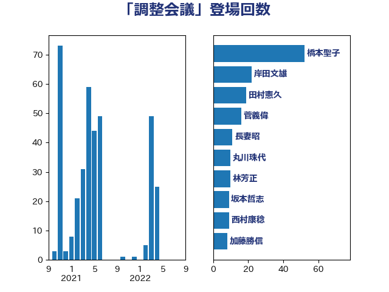

単語「調整会議」

| 橋本聖子 | 無所属 | 52 回 |
| 岸田文雄 | 自由民主党 | 22 回 |
| 田村憲久 | 自由民主党 | 19 回 |
| 菅義偉 | 自由民主党 | 16 回 |
| 長妻昭 | 立憲民主党 | 11 回 |
| 丸川珠代 | 自由民主党 | 10 回 |
| 林芳正 | 自由民主党 | 10 回 |
| 坂本哲志 | 自由民主党 | 9 回 |
| 西村康稔 | 自由民主党 | 9 回 |
| 加藤勝信 | 自由民主党 | 8 回 |
| 大口善徳 | 公明党 | 6 回 |
| 柚木道義 | 立憲民主党 | 6 回 |
| 渡辺周 | 立憲民主党 | 5 回 |
| 三谷英弘 | 自由民主党 | 4 回 |
| 古川禎久 | 自由民主党 | 4 回 |
| 小泉進次郎 | 自由民主党 | 4 回 |
| 山添拓 | 日本共産党 | 4 回 |
| 打越さく良 | 立憲民主党 | 4 回 |
| 田村まみ | 国民民主党 | 4 回 |
| 金子恭之 | 自由民主党 | 4 回 |
| 笠浩史 | 無所属 | 3 回 |
| 丹羽秀樹 | 自由民主党 | 2 回 |
| 吉川元 | 立憲民主党 | 2 回 |
| 塩田博昭 | 公明党 | 2 回 |
| 山本香苗 | 公明党 | 2 回 |
| 松野博一 | 自由民主党 | 2 回 |
| 熊田裕通 | 自由民主党 | 2 回 |
| 田島麻衣子 | 立憲民主党 | 2 回 |
| 田村智子 | 日本共産党 | 2 回 |
| 谷田川元 | 立憲民主党 | 2 回 |
| 里見隆治 | 公明党 | 2 回 |
| 中谷一馬 | 立憲民主党 | 1 回 |
| 伊藤孝恵 | 国民民主党 | 1 回 |
| 佐々木さやか | 公明党 | 1 回 |
| 加田裕之 | 自由民主党 | 1 回 |
| 古川康 | 自由民主党 | 1 回 |
| 吉川赳 | 無所属 | 1 回 |
| 宮崎雅夫 | 自由民主党 | 1 回 |
| 宮本徹 | 日本共産党 | 1 回 |
| 小池晃 | 日本共産党 | 1 回 |
| 山本博司 | 公明党 | 1 回 |
| 山田宏 | 自由民主党 | 1 回 |
| 川田龍平 | 立憲民主党 | 1 回 |
| 斎藤洋明 | 自由民主党 | 1 回 |
| 杉本和巳 | 日本維新の会 | 1 回 |
| 枝野幸男 | 立憲民主党 | 1 回 |
| 梅谷守 | 立憲民主党 | 1 回 |
| 武田良太 | 自由民主党 | 1 回 |
| 津島淳 | 自由民主党 | 1 回 |
| 片山大介 | 日本維新の会 | 1 回 |
| 磯崎仁彦 | 自由民主党 | 1 回 |
| 福島みずほ | 社会民主党 | 1 回 |
| 穂坂泰 | 自由民主党 | 1 回 |
| 美延映夫 | 日本維新の会 | 1 回 |
| 菊田真紀子 | 立憲民主党 | 1 回 |
| 西村智奈美 | 立憲民主党 | 1 回 |
| 角田秀穂 | 公明党 | 1 回 |
| 赤羽一嘉 | 公明党 | 1 回 |
| 足立康史 | 日本維新の会 | 1 回 |
| 金城泰邦 | 公明党 | 1 回 |
| 鈴木敦 | 国民民主党 | 1 回 |
| 鈴木貴子 | 自由民主党 | 1 回 |
| 高橋千鶴子 | 日本共産党 | 1 回 |
| 鷲尾英一郎 | 自由民主党 | 1 回 |